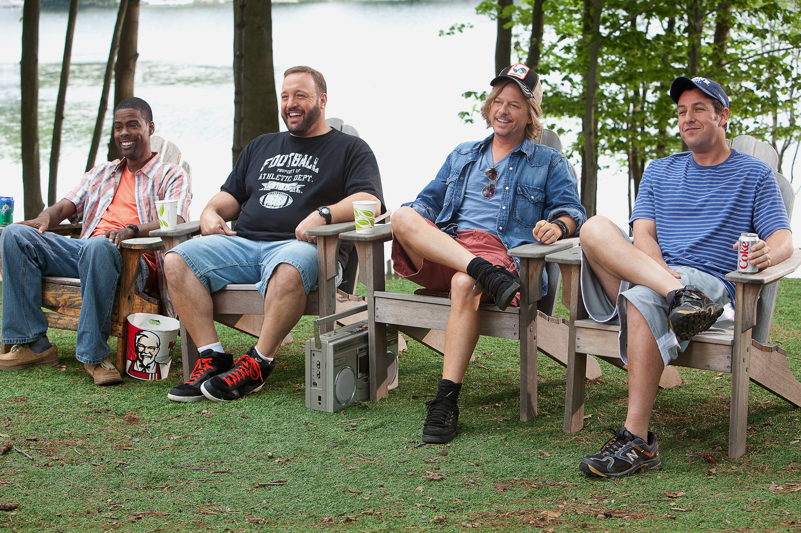

los protagonistas se reunen y deciden pasar el finde semana juntos en una casa junto al lago donde celebraron su campeonato viejo, durante esos dias hablan de sus problemas personales sobre sus parejas y hijos mientras se comportan de forma infantil, haciendo que sus mujeres se enojen y que sus hijos encuentren una nueva forma de distraerse sin estar con pantallas.
su contexto es que habla de situaciones tipicas en la sociedad estadounidense, sobre crisis familiares, divorcios, uso excesivo de tecnologia por parte de los chicos y la nostalgia por la infancia en pueblos chicos.
La pelicula tuvo un impacto muy bueno en el cine ya que fue un exito de taquillas lo que la convirtio en una de las comedias mas vistas de 2010.
Esta pelicula fue produccida en el interior de Estados unidos en un pueblo llamado Essex massachusets, tambien la pelicula se grabo en un lugar iconico como lo es Boston. La pelicula fue dirigida por Dennis Dugan, escrita y producida por Adam Sandler